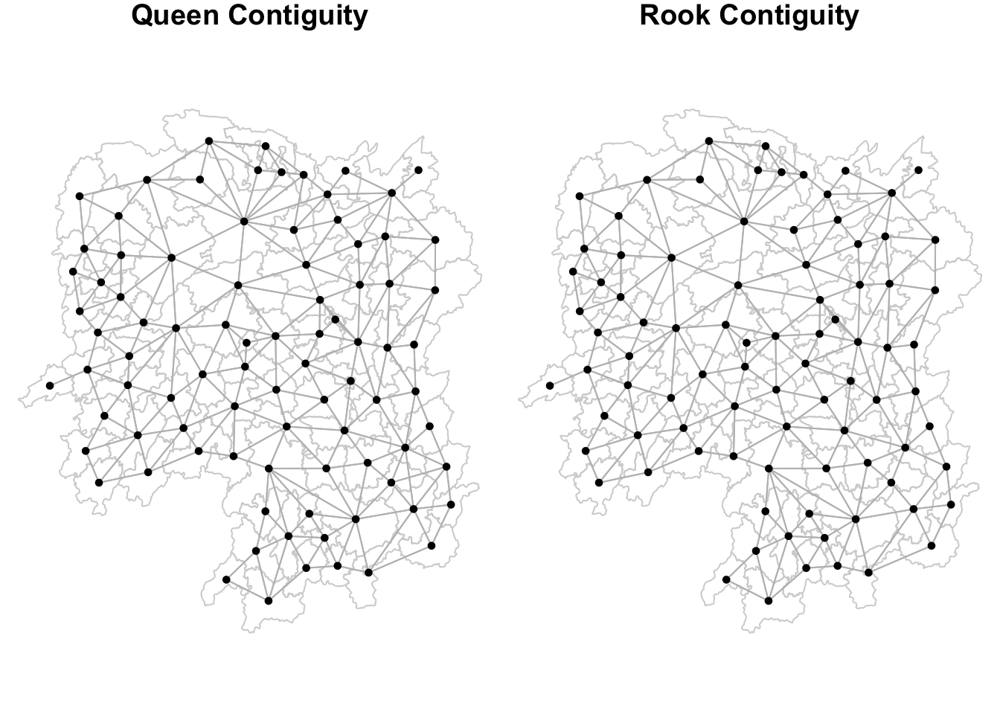

pacman::p_load(sf, spdep, tmap, tidyverse, knitr)Hands-On Exercise 03
In-Class Exercise
R
sf
Spatial Weights and Applications
Spatial Weights and Applications
1.0 Overview
Spatial weights are a key component in any cross-sectional analysis of spatial dependence. They are an essential element in the construction of spatial autocorrelation statistics, and provide the means to create spatially explicit variables, such as spatially lagged variables and spatially smoothed rates.
Computing spatial weight is an essential step toward measuring the strength of the spatial relationships between objects. In this exercise, the basic concept of spatial weight will be introduced. This is followed by a discussion of methods to compute spatial weights.
Particularly, we will explore using spdep, an R package specially designed for spatial weight analysis.
2.0 Importing Packages
In this hands-on exercise, we will use the following R package:
sf, a relatively new R package specially designed to import, manage and process vector-based geospatial data in R.
spdep,
tmap which provides functions for plotting cartographic quality static point patterns maps or interactive maps by using leaflet API.
tidyverse
knitr
3.0 Importing Datasets to R Environment
In this exercise, we will use the following datasets:
Hunancounty boundary layer. This is a geospatial data set in ESRI shapefile format.Hunan_2012.csvThis csv file contains selected Hunan's local development indicators in 2012.
3.1 Importing Geospatial Data
In this section, st_read() of sf package will be used to import the three geospatial data sets mentioned in previous section into R environment.
hunan <- st_read(dsn = "../data/geospatial",
layer = "Hunan")Reading layer `Hunan' from data source
`/Users/khantminnaing/IS415-GAA/data/geospatial' using driver `ESRI Shapefile'
Simple feature collection with 88 features and 7 fields
Geometry type: POLYGON
Dimension: XY
Bounding box: xmin: 108.7831 ymin: 24.6342 xmax: 114.2544 ymax: 30.12812
Geodetic CRS: WGS 843.1 Importing Aspatial Data
In this section, read_csv() of sf package will be used to import the csv file into R environment. The output is R dataframe class.
hunan2012 <- read_csv("../data/aspatial/Hunan_2012.csv")
hunan2012# A tibble: 88 × 29
County City avg_wage deposite FAI Gov_Rev Gov_Exp GDP GDPPC GIO
<chr> <chr> <dbl> <dbl> <dbl> <dbl> <dbl> <dbl> <dbl> <dbl>
1 Anhua Yiyang 30544 10967 6832. 457. 2703 13225 14567 9277.
2 Anren Chenz… 28058 4599. 6386. 221. 1455. 4941. 12761 4189.
3 Anxiang Chang… 31935 5517. 3541 244. 1780. 12482 23667 5109.
4 Baojing Hunan… 30843 2250 1005. 193. 1379. 4088. 14563 3624.
5 Chaling Zhuzh… 31251 8241. 6508. 620. 1947 11585 20078 9158.
6 Changning Hengy… 28518 10860 7920 770. 2632. 19886 24418 37392
7 Changsha Chang… 54540 24332 33624 5350 7886. 88009 88656 51361
8 Chengbu Shaoy… 28597 2581. 1922. 161. 1192. 2570. 10132 1681.
9 Chenxi Huaih… 33580 4990 5818. 460. 1724. 7755. 17026 6644.
10 Cili Zhang… 33099 8117. 4498. 500. 2306. 11378 18714 5843.
# ℹ 78 more rows
# ℹ 19 more variables: Loan <dbl>, NIPCR <dbl>, Bed <dbl>, Emp <dbl>,
# EmpR <dbl>, EmpRT <dbl>, Pri_Stu <dbl>, Sec_Stu <dbl>, Household <dbl>,
# Household_R <dbl>, NOIP <dbl>, Pop_R <dbl>, RSCG <dbl>, Pop_T <dbl>,
# Agri <dbl>, Service <dbl>, Disp_Inc <dbl>, RORP <dbl>, ROREmp <dbl>4.0 Geospatial Data Wrangling
4.1. Performing Relational Joint
In previous section, we have imported a shapefile hunan representing the geographical boundaries of Hunan and a dataframe hunan2012 which contains the attribute fields corresponding to counties in Hunan.
The next step in our analysis involves updating the attribute table of the hunan shapefile with the values from hunan2012.
Hence, we will need to update the attribute table of Hunan by using left_join() of dplyr package. This function effectively merges the two datasets, ensuring that each county's geographical data is accurately linked with its corresponding attribute data from the hunan2012 dataframe.
hunan <- left_join(hunan,hunan2012, join_by(County))%>%
select(1:4, 7, 15)5.0 Exploratory Spatial Data Analysis
In this section, we will carry out exploratory spatial data anlysis.
5.1 Visualising Regional Development Indicator
Now, we are going to prepare a basemap and a choropleth map showing the distribution of GDPPC 2012 by using qtm() of tmap package.
basemap <- tm_shape(hunan) +
tm_polygons() +
tm_text("NAME_3", size=0.2)
gdppc <- qtm(hunan, "GDPPC", fill.palette = "plasma")
tmap_arrange(basemap, gdppc, asp=1, ncol=2)
6.0 Computing Contiguity Spatial Weights
In this section, we will explore how to use poly2nb() of spdep package to compute contiguity weight matrices for the study area.
The poly2nb() function accepts an argument named queen, which can be set to either TRUE or FALSE. This argument plays a pivotal role in determining the criteria used for identifying neighboring regions. If the queen argument is not explicitly specified, the function defaults to TRUE and the function will generate a list of first-order neighbors using the Queen's contiguity criteria.
6.1 Computing QUEEN contiguity based neighbours
We will start out by computing Queen contiguity weight matrix
wm_q <- poly2nb(hunan, queen=TRUE)
summary(wm_q)Neighbour list object:
Number of regions: 88
Number of nonzero links: 448
Percentage nonzero weights: 5.785124
Average number of links: 5.090909
Link number distribution:
1 2 3 4 5 6 7 8 9 11
2 2 12 16 24 14 11 4 2 1
2 least connected regions:
30 65 with 1 link
1 most connected region:
85 with 11 links
Tip
The summary report above shows that there are 88 area units in Hunan. The most connected area unit has 11 neighbours. There are two area units with only one heighbours.
For each polygon in our polygon object, wm_q lists all neighboring polygons. To see the neighbors for the first polygon in the object, we can just use the following code chunk:
wm_q[[1]][1] 2 3 4 57 85Polygon 1 has 5 neighbors. The numbers represent the polygon IDs as stored in hunan SpatialPolygonsDataFrame class. We can retrive the county name of Polygon ID=1 by using the code chunk below:
hunan$County[1][1] "Anxiang"The output reveals that Polygon ID=1 is Anxiang county.
To reveal the county names of the five neighboring polygons, the code chunk will be used:
hunan$NAME_3[c(2,3,4,57,85)][1] "Hanshou" "Jinshi" "Li" "Nan" "Taoyuan"We can retrieve the GDPPC of these five countries by using the code chunk below.
nb1 <- wm_q[[1]]
nb1 <- hunan$GDPPC[nb1]
nb1[1] 20981 34592 24473 21311 22879The printed output above shows that the GDPPC of the five nearest neighbours based on Queen's method are 20981, 34592, 24473, 21311 and 22879 respectively.
You can display the complete weight matrix by using str() function.
str(wm_q)List of 88
$ : int [1:5] 2 3 4 57 85
$ : int [1:5] 1 57 58 78 85
$ : int [1:4] 1 4 5 85
$ : int [1:4] 1 3 5 6
$ : int [1:4] 3 4 6 85
$ : int [1:5] 4 5 69 75 85
$ : int [1:4] 67 71 74 84
$ : int [1:7] 9 46 47 56 78 80 86
$ : int [1:6] 8 66 68 78 84 86
$ : int [1:8] 16 17 19 20 22 70 72 73
$ : int [1:3] 14 17 72
$ : int [1:5] 13 60 61 63 83
$ : int [1:4] 12 15 60 83
$ : int [1:3] 11 15 17
$ : int [1:4] 13 14 17 83
$ : int [1:5] 10 17 22 72 83
$ : int [1:7] 10 11 14 15 16 72 83
$ : int [1:5] 20 22 23 77 83
$ : int [1:6] 10 20 21 73 74 86
$ : int [1:7] 10 18 19 21 22 23 82
$ : int [1:5] 19 20 35 82 86
$ : int [1:5] 10 16 18 20 83
$ : int [1:7] 18 20 38 41 77 79 82
$ : int [1:5] 25 28 31 32 54
$ : int [1:5] 24 28 31 33 81
$ : int [1:4] 27 33 42 81
$ : int [1:3] 26 29 42
$ : int [1:5] 24 25 33 49 54
$ : int [1:3] 27 37 42
$ : int 33
$ : int [1:8] 24 25 32 36 39 40 56 81
$ : int [1:8] 24 31 50 54 55 56 75 85
$ : int [1:5] 25 26 28 30 81
$ : int [1:3] 36 45 80
$ : int [1:6] 21 41 47 80 82 86
$ : int [1:6] 31 34 40 45 56 80
$ : int [1:4] 29 42 43 44
$ : int [1:4] 23 44 77 79
$ : int [1:5] 31 40 42 43 81
$ : int [1:6] 31 36 39 43 45 79
$ : int [1:6] 23 35 45 79 80 82
$ : int [1:7] 26 27 29 37 39 43 81
$ : int [1:6] 37 39 40 42 44 79
$ : int [1:4] 37 38 43 79
$ : int [1:6] 34 36 40 41 79 80
$ : int [1:3] 8 47 86
$ : int [1:5] 8 35 46 80 86
$ : int [1:5] 50 51 52 53 55
$ : int [1:4] 28 51 52 54
$ : int [1:5] 32 48 52 54 55
$ : int [1:3] 48 49 52
$ : int [1:5] 48 49 50 51 54
$ : int [1:3] 48 55 75
$ : int [1:6] 24 28 32 49 50 52
$ : int [1:5] 32 48 50 53 75
$ : int [1:7] 8 31 32 36 78 80 85
$ : int [1:6] 1 2 58 64 76 85
$ : int [1:5] 2 57 68 76 78
$ : int [1:4] 60 61 87 88
$ : int [1:4] 12 13 59 61
$ : int [1:7] 12 59 60 62 63 77 87
$ : int [1:3] 61 77 87
$ : int [1:4] 12 61 77 83
$ : int [1:2] 57 76
$ : int 76
$ : int [1:5] 9 67 68 76 84
$ : int [1:4] 7 66 76 84
$ : int [1:5] 9 58 66 76 78
$ : int [1:3] 6 75 85
$ : int [1:3] 10 72 73
$ : int [1:3] 7 73 74
$ : int [1:5] 10 11 16 17 70
$ : int [1:5] 10 19 70 71 74
$ : int [1:6] 7 19 71 73 84 86
$ : int [1:6] 6 32 53 55 69 85
$ : int [1:7] 57 58 64 65 66 67 68
$ : int [1:7] 18 23 38 61 62 63 83
$ : int [1:7] 2 8 9 56 58 68 85
$ : int [1:7] 23 38 40 41 43 44 45
$ : int [1:8] 8 34 35 36 41 45 47 56
$ : int [1:6] 25 26 31 33 39 42
$ : int [1:5] 20 21 23 35 41
$ : int [1:9] 12 13 15 16 17 18 22 63 77
$ : int [1:6] 7 9 66 67 74 86
$ : int [1:11] 1 2 3 5 6 32 56 57 69 75 ...
$ : int [1:9] 8 9 19 21 35 46 47 74 84
$ : int [1:4] 59 61 62 88
$ : int [1:2] 59 87
- attr(*, "class")= chr "nb"
- attr(*, "region.id")= chr [1:88] "1" "2" "3" "4" ...
- attr(*, "call")= language poly2nb(pl = hunan, queen = TRUE)
- attr(*, "type")= chr "queen"
- attr(*, "sym")= logi TRUE6.2 Computing ROOK contiguity based neighbours
In previous section, we have created neighbours based on QUEEN contiguity. In this section, we will try ROOK contiguity to create another set of neighbours which we will call wm_r.
wm_r <- poly2nb(hunan, queen=FALSE)
summary(wm_r)Neighbour list object:
Number of regions: 88
Number of nonzero links: 440
Percentage nonzero weights: 5.681818
Average number of links: 5
Link number distribution:
1 2 3 4 5 6 7 8 9 10
2 2 12 20 21 14 11 3 2 1
2 least connected regions:
30 65 with 1 link
1 most connected region:
85 with 10 linksThe summary report above shows that there are 88 area units in Hunan. The most connect area unit has 10 neighbours. There are two area units with only one neighbours.
6.3 Visualising Contiguity Weights
A connectivity graph takes a point and displays a line to each neighboring point. We are working with polygons at the moment, so we will need to get points in order to make our connectivity graphs. The most typically method for this will be polygon centroids. We will calculate these in the sf package before moving onto the graphs. Getting Latitude and Longitude of Polygon Centroids
We will need points to associate with each polygon before we can make our connectivity graph. It will be a little more complicated than just running st_centroid() on the sf object. We need the coordinates in a separate data frame for this to work. To do this we will use a mapping function. The mapping function applies a given function to each element of a vector and returns a vector of the same length. Our input vector will be the geometry column. We will be using map_dbl variation of map from the purrr package.
To get our longitude values we map the st_centroid function over the geometry column of us.bound and access the longitude value through double bracket notation [[]]and 1. This allows us to get only the longitude, which is the first value in each centroid.
longitude <- map_dbl(hunan$geometry, ~st_centroid(.x)[[1]])We do the same for latitude with one key difference. We access the second value per each centroid with [[2]].
latitude <- map_dbl(hunan$geometry, ~st_centroid(.x)[[2]])Now that we have latitude and longitude, we use cbind to put longitude and latitude into the same object.
coords <- cbind(longitude, latitude)Then, we will check the first few observations to see if the coordinates are formatted properly.
head(coords) longitude latitude
[1,] 112.1531 29.44362
[2,] 112.0372 28.86489
[3,] 111.8917 29.47107
[4,] 111.7031 29.74499
[5,] 111.6138 29.49258
[6,] 111.0341 29.79863Once we have extracted the coordinates of the centroid of each map unit, we will go ahead and plot neighbours maps.
6.3.1 Plotting QUEEN contiguity based neighbours map
plot(hunan$geometry, border="lightgrey")
plot(wm_q, coords, pch = 19, cex = 0.6, add = TRUE, col= "grey")6.3.2 Plotting ROOK contiguity based neighbours map
plot(hunan$geometry, border="lightgrey")
plot(wm_r, coords, pch = 19, cex = 0.6, add = TRUE, col = "grey")6.3.2 Plotting QUEEN and ROOK contiguity based neighbours map
par(mfrow=c(1,2))
plot(hunan$geometry, border="lightgrey", main="Queen Contiguity")
plot(wm_q, coords, pch = 19, cex = 0.6, add = TRUE, col= "grey")
plot(hunan$geometry, border="lightgrey", main="Rook Contiguity")
plot(wm_r, coords, pch = 19, cex = 0.6, add = TRUE, col = "grey")
7.0 Computing Distance Based Neighbours
In this section, we will explore how to derive distance-based weight matrices by using dnearneigh() of spdep package.
The function identifies neighbours of region points by Euclidean distance with a distance band with lower d1= and upper d2= bounds controlled by the bounds= argument. If unprojected coordinates are used and either specified in the coordinates object x or with x as a two column matrix and longlat=TRUE, great circle distances in km will be calculated assuming the WGS84 reference ellipsoid.
7.1 Determining the Cut-off Distance
Firstly, we need to determine the upper limit for distance band. This can be achieved by following the steps below.
Return a matrix with the indices of points belonging to the set of the k nearest neighbours of each other by using
knearneigh()of spdep.Convert the knn object returned by knearneigh() into a neighbours list of class nb with a list of integer vectors containing neighbour region number ids by using
knn2nb().Return the length of neighbour relationship edges by using
nbdists()of spdep. The function returns in the units of the coordinates if the coordinates are projected, in km otherwise.Remove the list structure of the returned object by using
unlist().
k1 <- knn2nb(knearneigh(coords))
k1dists <- unlist(nbdists(k1, coords, longlat = TRUE))
summary(k1dists) Min. 1st Qu. Median Mean 3rd Qu. Max.
24.79 32.57 38.01 39.07 44.52 61.79 The summary report shows that the largest first nearest neighbour distance is 61.79 km, so using this as the upper threshold gives certainty that all units will have at least one neighbour.
7.1 Computing fixed distance weight matrix
Now, we will compute the distance weight matrix by using dnearneigh() as shown in the code chunk below.
wm_d62 <- dnearneigh(coords, 0, 62, longlat = TRUE)
wm_d62Neighbour list object:
Number of regions: 88
Number of nonzero links: 324
Percentage nonzero weights: 4.183884
Average number of links: 3.681818
Tip
Average number of links: 3.681818" in the output refers to the average number of neighboring regions each region has within the distance range of 0-62. In the context of spatial analysis, a "link" is a connection between two regions that are considered neighbors based on the criteria we have set (in this case, distance of up to 62 units).
So, an average of 3.681818 means that, on average, each region in our study area has about 3 to 4 neighboring regions within a distance of 62 units.
Next, we will use str() to display the content of wm_d62 weight matrix. This time, we will combine table() and card() of spdep to display the matrix more neatly than simply using str().
table(hunan$County, card(wm_d62))
1 2 3 4 5 6
Anhua 1 0 0 0 0 0
Anren 0 0 0 1 0 0
Anxiang 0 0 0 0 1 0
Baojing 0 0 0 0 1 0
Chaling 0 0 1 0 0 0
Changning 0 0 1 0 0 0
Changsha 0 0 0 1 0 0
Chengbu 0 1 0 0 0 0
Chenxi 0 0 0 1 0 0
Cili 0 1 0 0 0 0
Dao 0 0 0 1 0 0
Dongan 0 0 1 0 0 0
Dongkou 0 0 0 1 0 0
Fenghuang 0 0 0 1 0 0
Guidong 0 0 1 0 0 0
Guiyang 0 0 0 1 0 0
Guzhang 0 0 0 0 0 1
Hanshou 0 0 0 1 0 0
Hengdong 0 0 0 0 1 0
Hengnan 0 0 0 0 1 0
Hengshan 0 0 0 0 0 1
Hengyang 0 0 0 0 0 1
Hongjiang 0 0 0 0 1 0
Huarong 0 0 0 1 0 0
Huayuan 0 0 0 1 0 0
Huitong 0 0 0 1 0 0
Jiahe 0 0 0 0 1 0
Jianghua 0 0 1 0 0 0
Jiangyong 0 1 0 0 0 0
Jingzhou 0 1 0 0 0 0
Jinshi 0 0 0 1 0 0
Jishou 0 0 0 0 0 1
Lanshan 0 0 0 1 0 0
Leiyang 0 0 0 1 0 0
Lengshuijiang 0 0 1 0 0 0
Li 0 0 1 0 0 0
Lianyuan 0 0 0 0 1 0
Liling 0 1 0 0 0 0
Linli 0 0 0 1 0 0
Linwu 0 0 0 1 0 0
Linxiang 1 0 0 0 0 0
Liuyang 0 1 0 0 0 0
Longhui 0 0 1 0 0 0
Longshan 0 1 0 0 0 0
Luxi 0 0 0 0 1 0
Mayang 0 0 0 0 0 1
Miluo 0 0 0 0 1 0
Nan 0 0 0 0 1 0
Ningxiang 0 0 0 1 0 0
Ningyuan 0 0 0 0 1 0
Pingjiang 0 1 0 0 0 0
Qidong 0 0 1 0 0 0
Qiyang 0 0 1 0 0 0
Rucheng 0 1 0 0 0 0
Sangzhi 0 1 0 0 0 0
Shaodong 0 0 0 0 1 0
Shaoshan 0 0 0 0 1 0
Shaoyang 0 0 0 1 0 0
Shimen 1 0 0 0 0 0
Shuangfeng 0 0 0 0 0 1
Shuangpai 0 0 0 1 0 0
Suining 0 0 0 0 1 0
Taojiang 0 1 0 0 0 0
Taoyuan 0 1 0 0 0 0
Tongdao 0 1 0 0 0 0
Wangcheng 0 0 0 1 0 0
Wugang 0 0 1 0 0 0
Xiangtan 0 0 0 1 0 0
Xiangxiang 0 0 0 0 1 0
Xiangyin 0 0 0 1 0 0
Xinhua 0 0 0 0 1 0
Xinhuang 1 0 0 0 0 0
Xinning 0 1 0 0 0 0
Xinshao 0 0 0 0 0 1
Xintian 0 0 0 0 1 0
Xupu 0 1 0 0 0 0
Yanling 0 0 1 0 0 0
Yizhang 1 0 0 0 0 0
Yongshun 0 0 0 1 0 0
Yongxing 0 0 0 1 0 0
You 0 0 0 1 0 0
Yuanjiang 0 0 0 0 1 0
Yuanling 1 0 0 0 0 0
Yueyang 0 0 1 0 0 0
Zhijiang 0 0 0 0 1 0
Zhongfang 0 0 0 1 0 0
Zhuzhou 0 0 0 0 1 0
Zixing 0 0 1 0 0 0